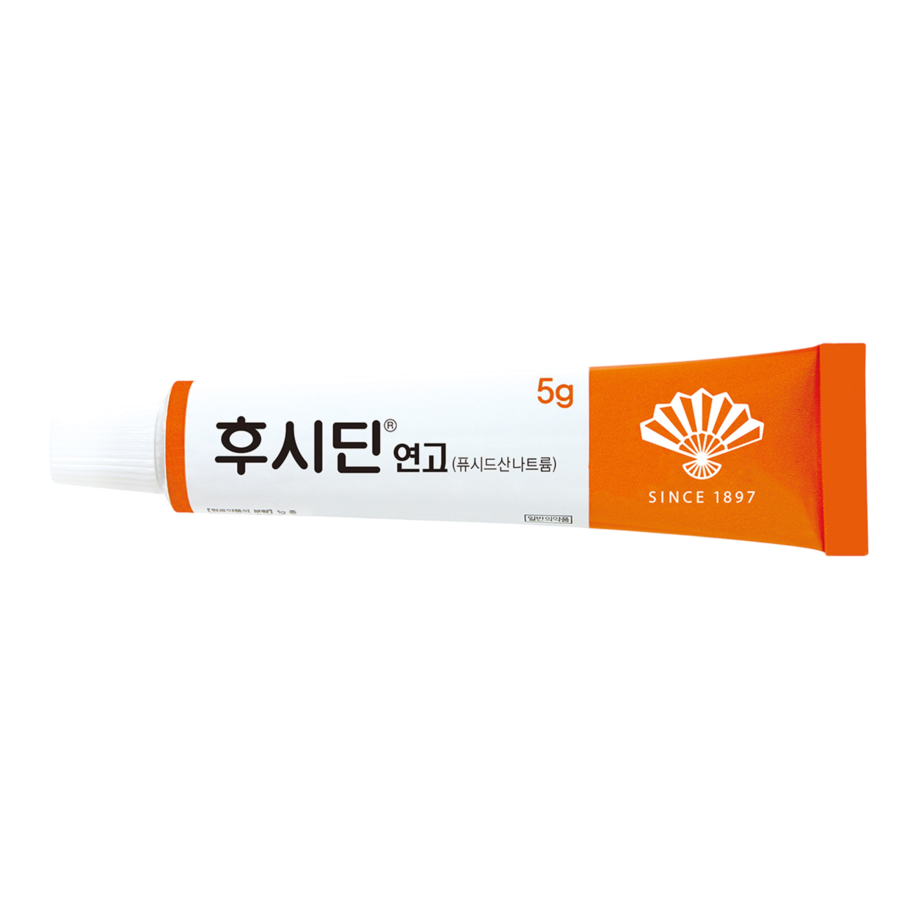
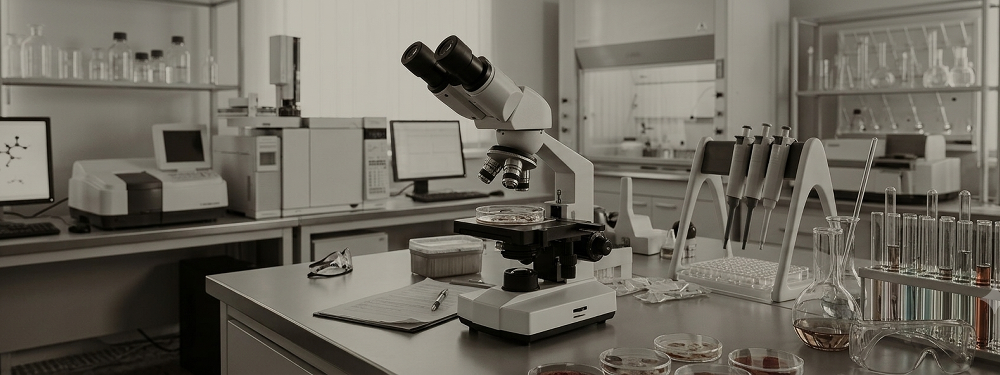
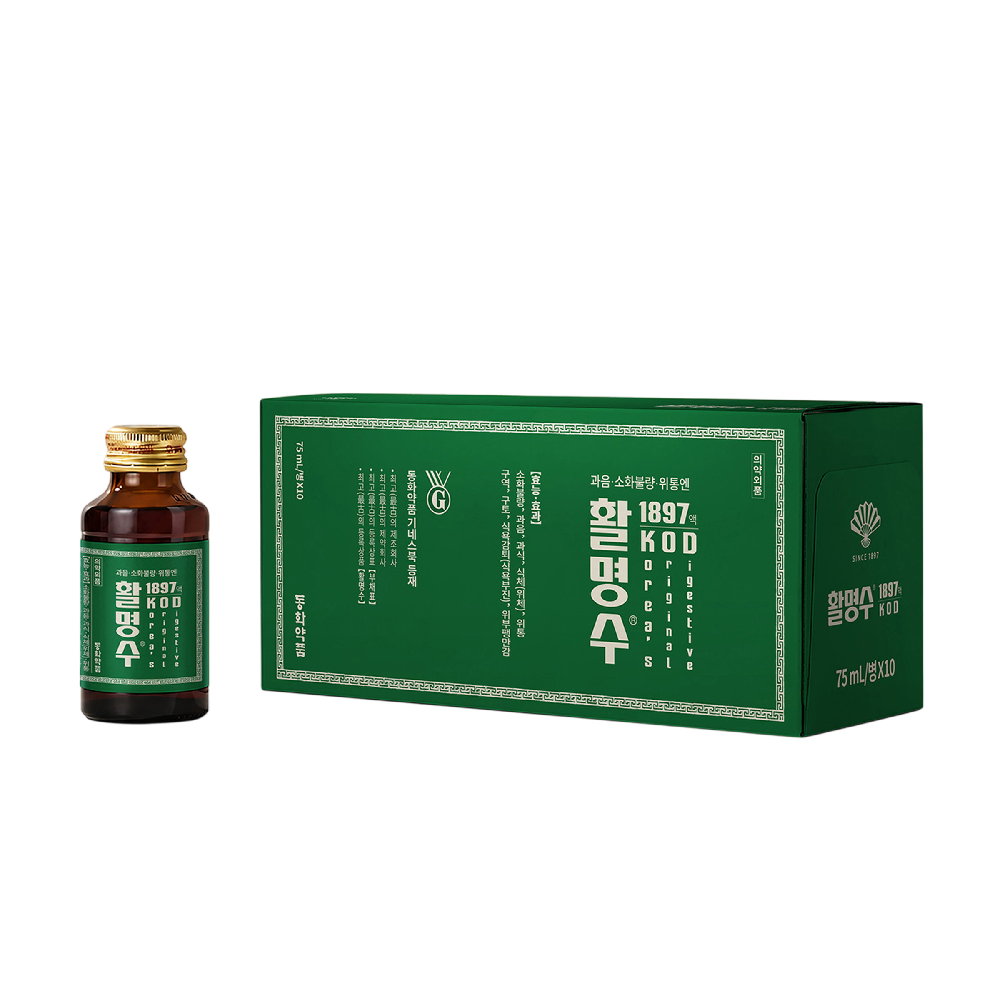
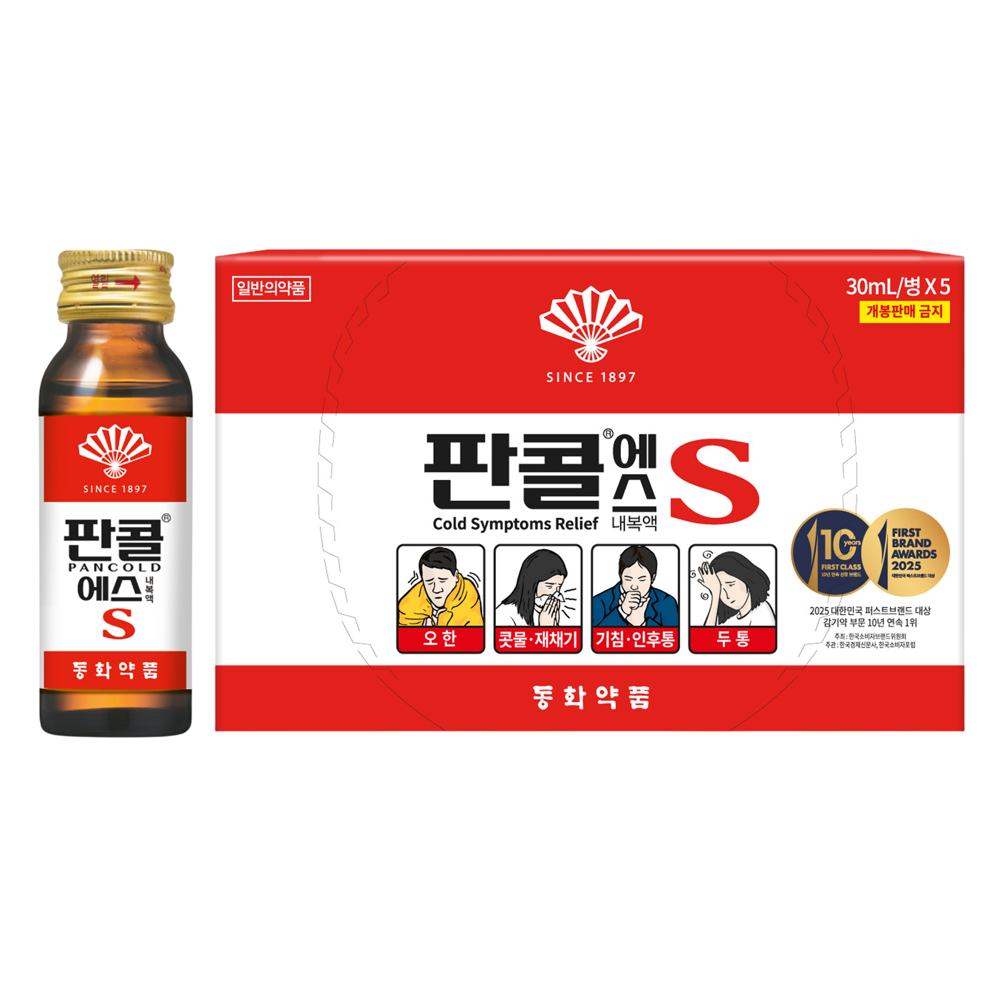

01 / NEW PRODUCT
신제품 개발
까스활명수 · 후시딘연고 · 판콜
일상 속 건강을 위한 다양한 제품 개발 경험
더 나은 치료와 건강한 일상을 위해, 동화약품은 신제품 개발과 신약 연구를 이어갑니다.
까스활명수, 후시딘연고, 판콜 등 다양한 신제품을 개발해 온 경험을 바탕으로 신약 개발에도 도전해 왔습니다. 변화하는 제약 환경에 대응하며 연구 경험과 기술을 미래 의약품 개발로 연결합니다.
신제품 개발부터 신약 개발과 기술이전까지,
동화약품의 연구개발 발자취를 소개합니다.

까스활명수 · 후시딘연고 · 판콜
일상 속 건강을 위한 다양한 제품 개발 경험
밀리칸주 · 자보란테
새로운 치료 가능성을 위한 신약 개발 도전
골다공증 치료제 후보물질 DW1350
연구 성과를 기술이전으로 연결동화약품은 신제품 개발과 신약 개발의 연구 비중을 균형 있게 운영해 중·단기 성장과 장기적인 미래 경쟁력을 함께 준비합니다.
중·단기적으로 신제품 개발을 통해 안정적인 성장을 추구합니다.
PRODUCT DEVELOPMENT장기적으로 미래 경쟁력 확보를 위한 신약 개발 역량을 키워갑니다.
NEW DRUG RESEARCH핵심 역량에 집중하고 산학연 공동연구와 외부 협력으로 연구를 확장합니다.
RESEARCH PARTNERSHIP동화약품은 경험과 기술을 바탕으로 새로운 의약품의 가능성을 연구합니다.